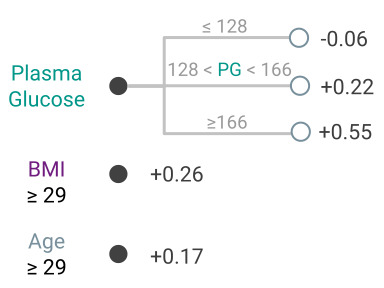

Modern machine learning has achieved impressive prediction performance, but often sacrifices interpretability, a critical consideration in many problems. Here, we propose Fast Interpretable Greedy-Tree Sums (\method), an algorithm for fitting concise rule-based models. Specifically, \methods generalizes the CART algorithm to work on sums of trees, growing a flexible number of them simultaneously. The total number of splits across all the trees is restricted by a pre-specified threshold, which ensures that FIGS remains interpretable. % a small number of total rules. Extensive experiments show that \methods achieves state-of-the-art performance across a wide array of real-world datasets when restricted to very few splits (e.g. less than 20). % total maintaining interpretability. Theoretical and simulation results suggest that \methods overcomes a key weakness of single-tree models by disentangling additive components of generative additive models, thereby significantly improving convergence rates for $\ell_2$ generalization error. We further characterize the success of \methods by quantifying how it reduces repeated splits, which can lead to redundancy in single-tree models such as CART. All code and models are released in a full-fledged package available on Github.
Here, we examine the Diabetes classification dataset, in which eight risk factors were collected and used to predict the onset of diabetes within 5 five years. Fitting, several models we find that with very few rules, the model can achieve excellent test performance.
For example, Fig 2 shows a model fitted using the [FIGS]() algorithm which achieves a test-AUC of 0.820 despite being extremely simple. In this model, each feature contributes independently of the others, and the final risks from each of three key features is summed to get a risk for the onset of diabetes (higher is higher risk). As opposed to a black-box model, this model is easy to interpret, fast to compute with, and allows us to vet the features being used for decision-making.

Fig 2. Simple model learned by FIGS for diabetes risk prediction.